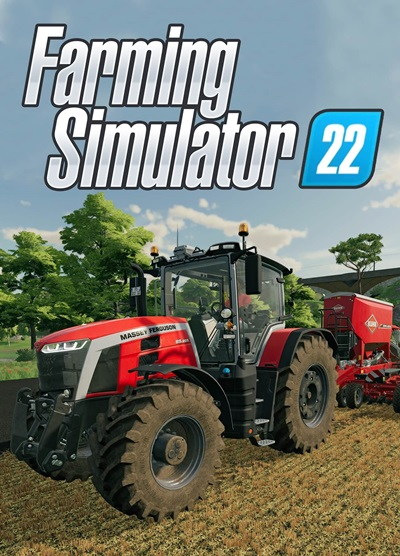
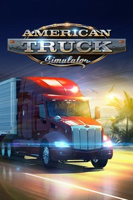

Röviden a Steamről:
A Steam egy tartalomtovábbító és -kezelő rendszer, amelyet a Valve Software fejlesztett ki. Funkciói különféle számítógépes szoftverek (túlnyomórészt játékok) digitális áruházi rendszerben történő értékesítése, többjátékos módok menedzselése, és közösségépítő háló fenntartása. Számos kényelmi funkciója közül kimagaslik a programok automatikus frissítése, barátlisták és csoportok létrehozása, mentések felhőalapú tárolása, és játékon belüli chat. Szabadon programozható felhasználói interfésze a Steamworks, melyet a játékok fejlesztői szabadon integrálhatnak játékaikba, hogy azok a Steam által kínált lehetőségeket maximálisan ki tudják használni (pl. többjátékos mód, játékon belüli tranzakciók, elérhető teljesítmények, és felhasználók által készített letölthető tartalmak).
A Steam feladata a WON (World Opponent Network) rendszer felváltása volt, amelyet 2004. július 31-én több hónapos bétatesztelések után sikeresen véghez is vitt, ezzel elérkezett a WON2, és ezzel együtt a Steam időszaka.
A Steam mostanra a legnagyobb tartalomterjesztésre fejlesztett platformmá vált, 2013-ban a piac 75%-át uralta, 2015-ben pedig a Steam-en eladott illetve itt érvényesített termékkulcsok értéke meghaladta a 3 és fél milliárd dollárt, amely a teljes piac 15%-át jelentette, több mint 125 millió felhasználóval. A siker további eszközök fejlesztéséhez vezetett: az önálló konzolként működő Steam Machine, az ennek operációs rendszereként funkcionáló SteamOS, valamint a Steam Controller és a Steam Link.

A Steamen megtalálható funkciók:
A program számos funkcióval rendelkezik, ami megkönnyítheti a játékvásárlást, a kapcsolattartást barátainkkal vagy az esti szórakozásunk helyszínének kiválasztását. Néhány a rengeteg funkció közül:
- Ismerősök: lehetőségünk van barátainkat megjelölni, így azokkal chatelni tudunk. A csevegés mellett azt is látjuk, hogy barátunk vonalban van-e és ha igen, hol játszik és milyen játékkal.
- Vendégmeghívások: megvásárolt játékunkba meghívhatjuk barátunkat, úgy, hogy ő nem veszi meg az adott játékot. A meghívó egy rövid időtartamra szól, tehát addig kipróbálhatja a meghívott fél a játékot. Ha az adott játék ezt lehetővé teszi, a meghívott fél a vásárlás után onnan folytathatja a játékot, ahol a meghívókártya lejártakor abbahagyta.
- Szerverfigyelő: a megvásárolt és telepített játékainkhoz tartozó szervereket tudjuk több szempont szerint rendezni és keresni. Szervereinket rendezhetjük, illetve megnézhetjük mely szervereken játszottunk régebben.
- Aktiválás: boltban megvásárolt dobozos játékunkat aktiválhatjuk, így az felkerül a saját Steam fiókunk alá.
- Hálózatfigyelő: megtekinthetjük a Steam által lefoglalt sávszélességet.
- Bolt: játékokat vásárolhatunk meg a Steam-en keresztül, amiket rögtön ki is fizethetünk hitelkártyával vagy PayPal-on keresztül.
- Nem Steam játék hozzáadása: olyan játékokat is hozzáadhatunk a Steamhez, amit nem a rendszeren kell aktiválni. Ezzel barátaink láthatják, mivel játszunk, és a játék közbeni felületet is biztosítja a kapcsolattartáshoz.
- SteamWorks: A játékosok élményét növelő szolgáltatások(pl. teljesítmények, fejlesztő által kezdeményezett felmérések), melyeket a Steam biztosít.
- Steam Cloud: A játékoknak lehetőségük van a játékosok statisztikáit, egyjátékos mentéseit egy internetes tárhelyen tárolni. A jelenlegi elérhető tárterület 100 megabájt/játék/steam-fiók.
- SteamPlay: A 2010-es nagy frissítés közben a Steam, és bizonyos játékok Mac-re is kiadásra kerültek. A SteamPlay-t támogató játékoknál a Steam Cloud kihasználásával a játékos az asztali számítógépe és Mac-je között az internet segítségével átviheti a statisztikáit, játékmentéseit. 2013. február 14-én a Steam megjelent Linuxra is.
- Játékon belüli vásárlások: A Steamworks segítségével a fejlesztők különböző, játékon belül elérhető elemeket (tárgyak, zárolt pályák) is megvásárolhatóvá tehetnek a játékhoz.
- Steam Zöld Út: A Zöld út program keretén belül a fejlesztők beküldhetik a játékukat, vagy szoftverüket, és a felhasználók megszavazhatják, hogy szeretnék-e a Steamen látni a játékot. Ha a játék elegendő szavazatot kap, a Valve kapcsolatba lép a fejlesztővel, hogy megtárgyalják Steames terjesztés feltételeit, a termék árát, és a részesedést.
- Piac: A piacon a felhasználók a játékokban szerzett/vásárolt tárgyaikkal kereskedhetnek.
- Steam Big Screen: A Steam nagyobb felbontású televíziókra átdolgozott felülete, lehet kontrollerrel is irányítani.
Megvásárolható játékok: |
||

Among Us
4.49 |

Farming Simulator 22
19.99 |

Overcooked! 2
22.99 |

Cyberpunk 77
59.99 |

American Truck Simulator
4.99 |

Baldur's Gate 3
59.99 |